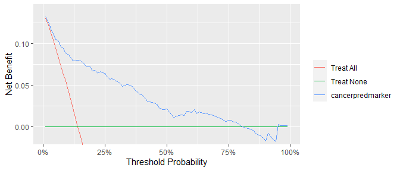
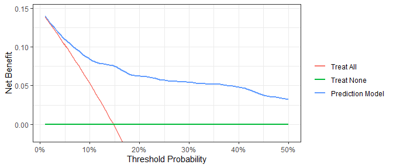

Diagnostic and prognostic models are typically evaluated with measures of accuracy that do not address clinical consequences. Decision-analytic techniques allow assessment of clinical outcomes but often require collection of additional information and may be cumbersome to apply to models that yield a continuous result. Decision curve analysis is a method for evaluating and comparing prediction models that incorporates clinical consequences, requires only the data set on which the models are tested, and can be applied to models that have either continuous or dichotomous results.
Installation
You can install dca from GitHub with:
# install.packages("devtools")
devtools::install_github("ddsjoberg/dcurves")Examples
To assess models predicting binary endpoints.
library(dcurves)
dca(cancer ~ cancerpredmarker,
data = df_binary,
thresholds = seq(0, 0.35, 0.01),
label = list(cancerpredmarker = "Prediction Model")) %>%
autoplot(smooth = TRUE)
#> Assuming '1' is [Event] and '0' is [non-Event]
Time-to-event or survival endpoints
dca(Surv(ttcancer, cancer) ~ cancerpredmarker,
data = df_surv,
time = 1,
thresholds = seq(0, 0.50, 0.01),
label = list(cancerpredmarker = "Prediction Model")) %>%
autoplot(smooth = TRUE)